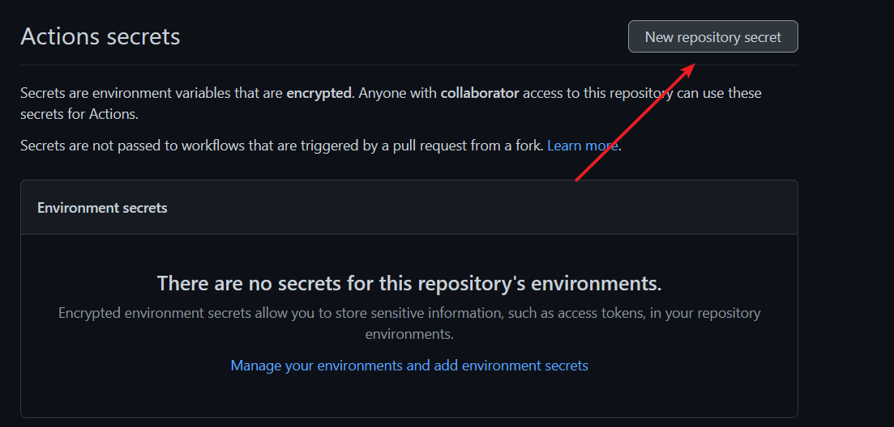
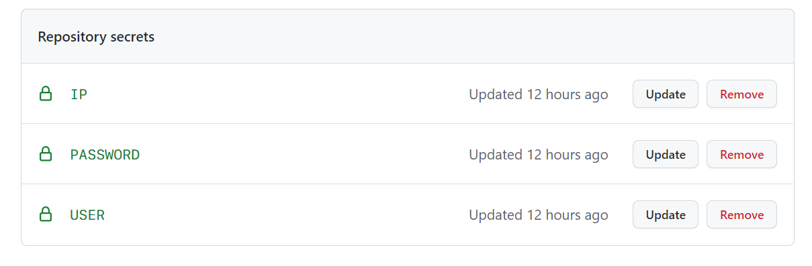
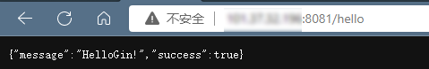
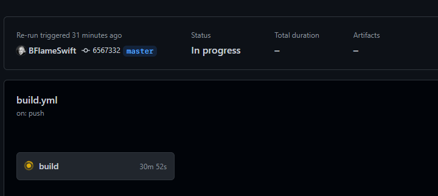
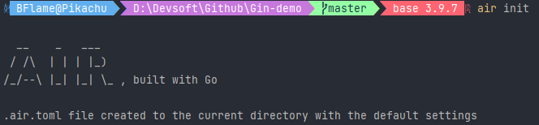
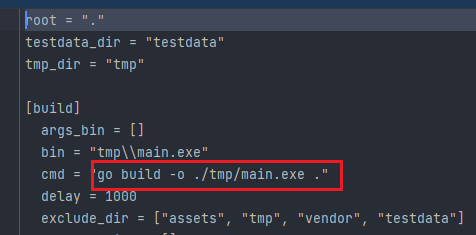
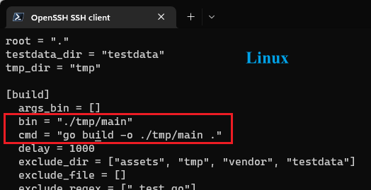
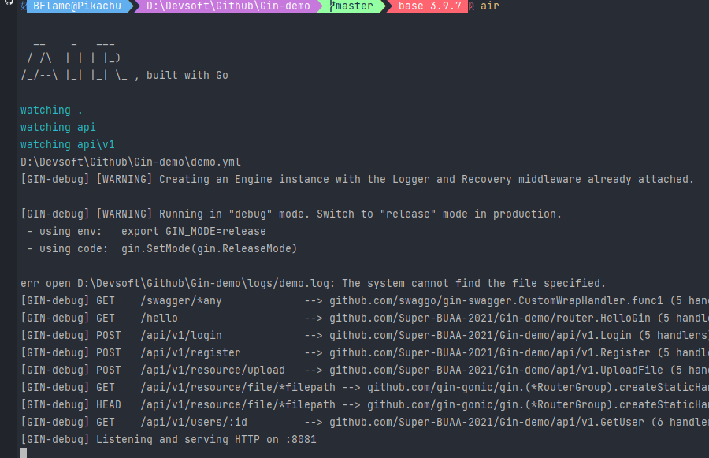
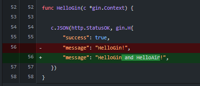
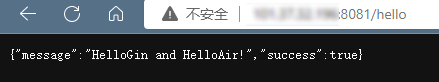

1. 利用Github Action 自动部署Go项目
1.1. 简介
Github 针对开发者提供了很多免费的实用工具，Github Action 就是其中之一。你可以将其理解为一个特殊的脚本，在满足一定条件的时候它就会执行（例如检测到对某一分支的push，到达了一天的0点等）。
在网站开发中，后端经常需要把刚写完的内容同步至服务器端供前端测试，如果手动部署，则需要先连接服务器，然后git pull，再将后端运行起来。一次两次还好，多了之后会很浪费时间且比较枯燥。适当使用 Github Action 就可以把这个过程自动化，下面将介绍如何实现自动部署。
而由于本人的生疏不足，因此此处介绍两种常用的方法进行自动化部署。第一种较为常见，类似DjangoBook-GithubAction不借助外部工具的部署方案，另一种则是使用Go的工具Air来对Go项目进行热加载，即自动编译、重启程序，也可以达到自动部署的作用。
2. Github Action自动部署
2.1.1. 准备工作
事实上，Go项目（此处以一Gin项目为例）的部署，就是在服务器上关掉之前的后端服务，并重新打包go build main.go 并运行项目./main & 即可。不过在自动化部署中，需要做到登录到服务器，并执行相应命令。
在Commit触发workflow之前，首先需要配置Secrets,以下关于配置Secret的操作直接摘自Marvolo’s Djangobook
进入Github 里对应的仓库页面，点击Settings->Secrets（如果找不到Secrets，可能是权限不够，可以让仓库拥有者来操作）。这里存放的是这个仓库中的所需要的不对外公开的常量。点击创建新 Secrets：

然后分别填入常量名和值：

这个时候就不能再看到这个常量的值了，只能修改或者删除。之所以这么操作，是考虑到之后仓库可能改成 public，为了避免服务器的信息泄露，于是使用了 Secrets 来做一个安全防护。关于Github Action的更具体使用可以查询官方文档或是其他关于Github Action的教程吧。
个人目前的.github/workflows/build.yml 内容如下：
name: build
on:
push:
branches: [master]
jobs:
build:
runs-on: ubuntu-latest
steps:
- name: setup
run: sudo apt install sshpass
- name: pull and build
env:
GO: /usr/local/go/bin/go
run: |
sshpass -p ${{secrets.PASSWORD}} ssh -o StrictHostKeyChecking=no root@${{secrets.IP}} "cd /opt/Project/Gin-demo; git config --global http.postBuffer 1048576000;git pull; make kill; make dep; ps -ef | grep Gin-demo; ls ./scripts/; nohup make build_and_run"
上面具体做了几件事：
登录到服务器
pull仓库
kill之前运行的程序
make killbuild-and-run
make build_and_run
不过观察可以发现，workflow中在登录到服务器后，使用了一系列make 操作。 即将一些命令简化为make + *的格式，还是使用了Makefile，个人的配置如下，有了Makefile便可在开发中节省不少力气以及加快开发进程，具体更高级的Makefile使用可以去[1]中查看。
BINARY_NAME=Gin-demo
# Github-action中指定go路径并使用更稳定
GO=/usr/local/go/bin/go
build:
GOARCH=amd64 GOOS=linux ${GO} build -o ${BINARY_NAME}-linux main.go
# 根据文件名查找相应进程并kill
kill:
ps -ef | grep ${BINARY_NAME} | grep -v grep | awk '{print $2}' | xargs kill -9
run:
./${BINARY_NAME}-linux
build_and_run: build run
clean:
${GO} clean
rm ${BINARY_NAME}-linux
test:
${GO} test ./...
test_coverage:
${GO} test ./... -coverprofile=coverage.out
# 更新包
dep:
${GO} mod tidy
vet:
${GO} vet
lint:
golangci-lint run --enable-all
然而之所以有第二种方法，还是因为这种流程下来，会导致运行后端./Gin-demo后，workflow 无法直接结束：等到Gin-demo结束。即便已经完成了一系列的操作，当然后端也已成功部署。在此也希望后续有人或是我自己能发现问题并改进吧。


3. 基于Air的热加载
关于Air的简单介绍与使用可以参见[2]， 简单来讲，若没有使用2，当修改了代码后，需要重新编译运行才能得到更新后的程序。而使用了air后，在命令行使用air 便可以运行程序，并能热更新程序，（类似Django）
$ air
3.1. Air的配置
- 安装Air（当然，linux要设置好GOPATH并添加环境变量）[3]
go install github.com/cosmtrek/air@latest
Air的使用
初始化配置文件：在项目根目录下运行：
air init
随后得到了配置文件.air.toml，此时直接运行air 往往会向./tmp/目录下build文件，而与本Gin-demo默认为项目根目录的意味不符，于是我们修改配置文件


修改为如下代码即可
# Windows
bin = "main.exe"
cmd = "go build -o ./main.exe ."
# linux
bin = "main"
cmd = "go build -o ./main ."
随后项目成功运行

而Linux上修改大致内容相同。
而服务器Linux上的剩余工作则很简单了，相应的GithubAction执行的命令是之前的子集，具体到pull代码下来即可。由于在服务器上实现使用air &，则在更新代码后由Air自动执行热重启。
name: build
on:
push:
branches: [master]
jobs:
build:
runs-on: ubuntu-latest
steps:
- name: setup
run: sudo apt install sshpass
- name: pull
run: |
sshpass -p ${{secrets.PASSWORD}} ssh -o StrictHostKeyChecking=no root@${{secrets.IP}} "cd /opt/Project/Gin-demo; git config --global http.postBuffer 1048576000;git pull"
- name: query_backend_status
# 查看后端运行情况
env:
# go build得到的文件名
PROJ_NAME: main
run: |
sshpass -p ${{secrets.PASSWORD}} ssh -o StrictHostKeyChecking=no root@${{secrets.IP}} "ps -ef | grep ${PROJ_NAME}"
具体测试如下：
最新提交中，我将HelloGin的代码进行修改：

等到workflows结束后，访问ip:port,发现已经部署成功。此外经过在部署前后查看进程的PID发现，的确进程PID发生了变化，可见热重启发挥了作用。

相比较而言，使用Air进行部署的确简单快捷。
最后我在查询资料的途中，发现了另一种自动部署方法， 读者可以自行尝试，不过个人觉得原理类似，但是配置相对Air繁琐，不顾多赘述。
4. 参考
[1] Makefile使用
[2] Air 简单介绍
[3] 设置GOPATH
[4] Air的简单使用
[5] 另一种Go项目自动部署方法
[6] Air配置文件详细介绍